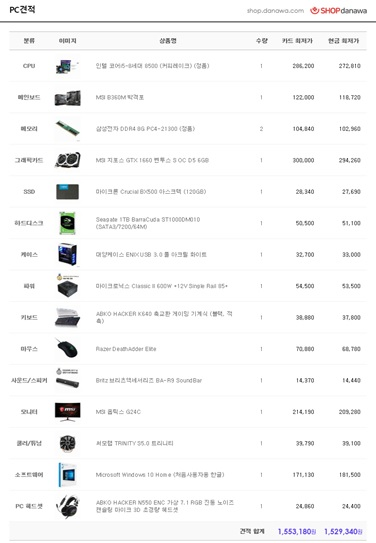

CPU
컴퓨터에서 구성 단위 중 기억, 연산, 제어의 3대 기능을 종합하는 장치인 Central Processing Unit(중앙 처리 장치)의 줄임말.
컴퓨터의 두뇌와 같은 부분이라 CPU가 없는 컴퓨터는 동작할 수 가 없다.
비트 크기는 해당 아키텍처를 사용하는 컴퓨터에서의 워드 크기를 의미한다.
워드 크기란 CPU에서 1사이클에 처리할 수 있는, 다시 말해 한 번에 처리할 수 있는 비트의 수를 말한다.
4비트에서 128비트까지 다양하지만 현재 대중적으로 쓰이는것은 32비트와 64비트가 대부분이다.
조립식 컴퓨터를 구매할때 가격을 많이 먹는 부분중 하나이다.
RAM
롬과 함께 컴퓨터의 주 기억 장치로, 롬과는 달리 자유롭게 읽고 쓸 수 있다는 특징을 기억해야 한다.
컴퓨터는 CPU에서 이뤄진 연산을 메모리에 기록하며 또 읽어온다.
즉, 메모리가 없으면 컴퓨터는 동작하지 못한다.
당연히 램의 용량이 클수록 그 용량만큼 동시에 기록하고 연산하는 것이 가능하다는 것이며
고용량 램일수록 컴퓨터의 성능이 올라가고 가격이 비싸진다.
원래 4~5만원대 였던 가격이 2017년 10월에 가격이 8GB DDR4기준으로 148290원 까지 폭등햇다가,
점차 낮아져서 2019년 3월 기준으로 다시 48,900원에서 50000원 아래로 떨어졌다.
메인보드
컴퓨터에는 CPU, 파워 서플라이, RAM, HDD등 수많은 부품이 들어 있다.
이러한 부품들을 하나로 연결해주는 회로를 가지고 있으며 밖으로 신호를 보낼 수 있는
출력 포트를 가지고 있는 부품이 필요한데 이 기능들을 가지고 있는 부품이 메인보드이다.
파워 서플라이만큼이나 돈을 아끼지 말아야 하는 부품으로, 어떻게 보면 파워 서플라이
이상으로 컴퓨터의 안정성을 좌우하는 부품이다.
인텔과 AMD의 칩셋이 달라서 같은 메인보드라도 CPU의 회사에 따라 제품이 다르다.
현재 일반적인 규격인 ATX규격이 기본이다. mATX는 ATX를 소형화 시킨 규격으로,
미니 타워나 슬림형 케이스에서도 사용할 수 있다. 최근 퍼포먼스급 메인보드도
mATX 규격이 차츰 등장하고 있다.
HDD
컴퓨터의 주요 부품 가운데 하나로, 보조기억장치이다.
주기억장치를 보조하는 역할을 하는 부품이라는 의미이지만,
그것보다는 비휘발성 데이터 저장소로서의 역할이 훨씬 더 중요하다.
비휘발성 데이터 저장소 가운데 가장 대중적이고 용량 대비 가격이 가장 저렴하다.
SSD
하드디스크(HDD)를 대체하기 위해서 개발된 "신세대" 보조저장장치.
플래시 메모리로 이루어진다. SSD의 가장 큰 장점은 데이터 입/출력 속도이다.
파일 전송 속도가 HDD에 비해 매우 빠르다. 아주 작다. 소음도 없다. 발열도 적다.HDD보다 비싸다.
그래픽 카드
그래픽 카드란 CPU의 명령하에 이루어지는 그래픽 작업을 전문적으로 빠르게 처리하고
디지털 신호를 영상 신호로 바꿔 모니터로 전송하는 장치다.
컴퓨터가 동작하는데 필수적인 요소는 아니다.
사양이 높을수록 크기와 무게가 늘어난다.
파워서플라이
전원 공급 장치는 외부에서 들어오는 교류 전류를 직류로 변환해서 전자제품에 전원을 공급해주는 장비이다.
사람의 심장과 같은 역할을 하기때문에 전기공급을 책임지는 중요한 부품이다.
초보 조립 컴퓨터 구매자가 가장 실수하는 부품중 하나이다.
너무 저가의 질이 안좋은 제품을 구매하거나 자신의 사양이 요구하는 것보다 적은 것을 살 수있다.
모니터
컴퓨터의 화면을 보여주는 출력장치이다.
반드시 필요한 인터페이스
마우스
컴퓨터의 커서를 움직여주는 장치
볼마우스와 광마우스가 있는데 현재는 광마우스가 쓰인다.
키보드
컴퓨터의 입력장치들 중 가장 대표적이고 기본적인 도구이다.
구동방식에 따라 종류가 다양하다.
마이크, 스피커
컴퓨터에서 소리를 입력, 출력 시켜주는 장치이다.
나만의 가상 견적
